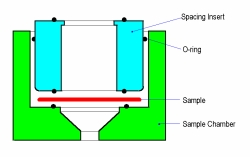
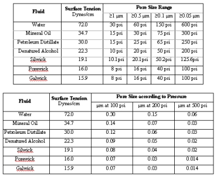

The standard sample chamber on your porometer can be used to test larger samples. For smaller pieces, an assortment of adapter plates is provided. These plates fit inside the main chamber to reduce the effective test area.
To open the chamber, unscrew the chamber lid and remove the chamber insert. The spacing insert may not easily pull out by hand; an extraction tool is provided with the instrument for this purpose. To use the extractor, place the thick plastic ring of the tool around the chamber rim. The pin of the tool will drop into the hole at an angle; once it is in, apply force to the back end of the lever. The insert will pop up.
The top of the insert has an opening with a lip; the bottom face has three small holes positioned around the edge. The holes align with the positioning pins mounted in the bottom of the sample chamber. An O ring is located in the bottom of the chamber and seals against the bottom of your sample or adapter plate.
A sample fits between the O rings in the bottom of the chamber and the bottom of the chamber insert. Any gas flowing through the sample will be constrained by these two O rings to flow down and out of the bottom of the sample chamber. The spacing insert attached to the O-ring prevents gas from escaping through the sides of the chambers, eliminating possible errors in flow rate and pressure measurements.
Once the chamber has been opened, make sure that the sample will fit into the lower part of the chamber. The diameter of a sample must be large enough to completely cover the O ring in the bottom of the chamber without interfering with the alignment pins or chamber side. Adapter plates will be need for testing small diameter samples; a description of how to se up smaller samples follows in the next few sections.
Samples of various thicknesses require different size spacing inserts. Several are provided. The thickest insert is used for thin samples. The screen at the bottom of the thicker inserts keeps samples intact under higher pressures. The thinner inserts do not include screens since thicker samples are less likely to deform from the applied pressure.
Be sure to seal the side O-ring to the side of the chamber. Make sure that the top of the insert is above the rim of the chamber. Use the thickest insert that works with your sample. The chamber cap screws onto the chamber and seals with the top O ring of the insert. Samples too large to fit in the standard sample chamber must be mounted in an external chamber connected to the porometer with a quick-connect coupler.
When running a bubble point test, saturate the sample according to the following Pore Size Range Table below. The fluid should be capable of detecting all the pores in the sample at the maximum pressure of the instrument. We recommend using Galwick or Silwick, which are excellent for testing because of how they wet all samples very quickly, have a low surface tension, and low vapor pressures. PMI no longer recommends using Water or Porwick as a wetting fluid, as these fluids may evaporate through the pores of the sample before any accurate measurements are made during longer tests. For more information, refer to the section on Bubble Point Testing.
Make sure that all the pores in the sample are filled with the fluid. This will be done when all of the material is covered by a film of the wetting fluid. The fluid must have a low vapor pressure so that it will stay in the pores of the sample until pressure forces it out.
| Back | Next |